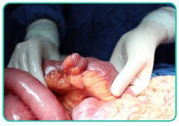
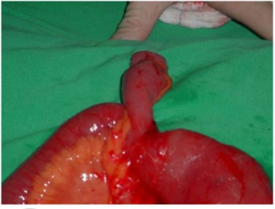
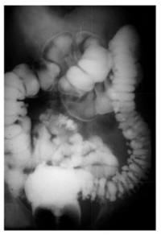

Questão 1 · Doença Diverticular · Cirurgia · 4000183326Em relação à doença diverticular dos cólons, é INCORRETO afirmar que:
A Divertículos são protusões anormais da parede do cólon, geralmente relacionadas à interação entre aumento da pressão intra-abdominal, alterações de motilidade intestinal, alterações da estrutura colônica e dietas pobres em fibras.
B Divertículos ocorrem em áreas de fraqueza da parede do cólon, relacionadas a pequenas arteríolas, as quais penetram a camada muscular.
C Um pseudodivertículo é aquele que envolve em sua protusão todas as camadas do cólon.
D O sigmoide e cólon descendente são as regiões mais comumente acometidas.
Questão 2 · Divertículo de Meckel · Divertículo de Meckel · Cirurgia · 4000183324O divertículo de Meckel é uma anormalidade anatômica que pode ser encontrada em meio cirúrgico; em relação a ele, pode-se afirmar que:
A É a anormalidade anatômica mais comumente encontrada, estando presente em aproximadamente 12% da população.
B Geralmente é localizado na borda mesentérica e em jejuno proximal.
C A maioria dos divertículos são benignos e diagnosticados acidentalmente em autópsias, laparotomias exploradoras ou exames contrastados.
D O tratamento do divertículo de Meckel é acompanhamento clínico, e sua cirurgia de ressecção dificilmente é realizada.
Questão 3 · Doença Diverticular · Cirurgia · 4000165154Os divertículos, são dilatações saculares anormais da parede do cólon, que ocorre
A com alteração da motilidade e uma dieta rica em fibras.
B com alteração da motilidade e uma dieta pobre em fibras.
C quando há espessamento acentuado da camada muscular.
D do lado anti-mesentérico ao longo das tênias cólicas mesentéricas.
E quando há protrusão da mucosa e da camada muscular, sem a serosa.
Questão 4 · Divertículo de Meckel · Cirurgia · Hérnia de Ritcher · 4000145151O divertículo de Meckel é a anomalia congenital mais encontrada no intestino delgado, ocorrendo em cerca de 2% da população. Sobre essa doença, assinale a alternativa INCORRETA.
A A apresentação clínica mais comum é o sangramento gastrointestinal, que ocorre em 25% a 50% dos pacientes que se apresentam com complicações.
B A presença de tecido heterotópico não é rara, sendo a mucosa gástrica a mais comum (presente em 50% de todos os divertículos de Meckel).
C O encarceramento do divertículo em uma hérnia inguinal se denomina hérnia de Richter.
D O tratamento de um divertículo de Meckel sintomático deve ser a intervenção cirúrgica imediata.
Questão 5 · Fisiopatologia · 4000145147Na doença diverticular do colón, os divertículos são anatomicamente herniações da mucosa através da parede colônica nos locais de penetração das arteríolas na parede muscular. O local de mais frequente desenvolvimento dessa doença é:
A No íleo terminal e ceco.
B No colón esquerdo, principalmente sigmoide.
C No cólon transverso.
D No cólon ascendente e ceco.
Questão 6 · Diagnóstico · Manif estações Clínicas · 4000145146Pacientes em geral acima de 60 anos, com história alimentar de dietas com baixo teor em bras e elevado teor de carboidratos, que passam a desenvolver dor abdominal em hipogástrio ou quadrante inferior esquerdo, acompanhada de mal-estar, febre, alteração do hábito intestinal e que ao exame sco apresentam abdome tenso á palpação em anco esquerdo têm o diagnóstico inicial e podem ser investigados, respectivamente:
A Doença de Chron e trânsito intestinal.
B Diverticulite do cólon não complicada e tomografia computadorizada de abdome total.
C Câncer de retossigmoide e colonoscopia.
D Retocolite ulcerativa e retossigmoidoscopia.
Questão 7 · Diagnóstico · Gastroenterologia · Tratamento · 4000141993Paciente do sexo masculino, 65 anos, vem ao seu consultório trazendo consigo uma tomogra a que o deixou bastante preocupado. O exame foi realizado na vigência de uma queda no domicílio em que teve uma contusão abdominal há 2 meses atrás. O laudo desta tomogra a não evidenciou quaisquer lesões abdominais traumáticas, porém foram observados vários divertículos em cólon descendente e sigmoide. O paciente nega história de dor abdominal na Fossa Ilíaca Esquerda, referindo apenas constipação crônica. Qual das seguintes orientações ao paciente é
A Pacientes com diagnóstico de divertículos no cólon esquerdo devem ser encaminhados para ressecção cirúrgica dos mesmos devido ao alto risco de evolução para doença maligna.
B A doença diverticular dos cólons é uma condição bastante comum após os 60 anos de idade, principalmente quando o paciente apresenta constipação crônica”.
C A presença dos divertículos no intestino grosso não causa sintomas, porém há chances que eles compliquem com episódios de sangramento ou inflamação e dor, necessitando avaliação médica imediata.
D Quadros inflamatórios leves podem ser tratados em casa, com antibióticos e dieta, no entanto casos mais graves demandam internação hospitalar e apresentam risco de tratamento cirúrgico urgente, inclusive com realização de colostomia.
Questão 8 · Diagnóstico · Manif estações Clínicas · 4000141054A respeito da doença diverticular dos cólons, assinale a alternativa correta.
A O uso de corticosteroides está associado ao maior risco de perfuração e complicações sépticas.
B O número de relatos de casos de diverticulite está diminuindo em todo o mundo.
C Na maior parte dos pacientes acometidos por essa doença, a presença de divertículos está associada à diminuição da pressão intraluminal dos cólons.
D A ocorrência de diverticulite está associada à maior ingestão de grãos e sementes.
E O reto é o local mais comum de aparecimento de divertículos adquiridos, logo em seguida ao sigmoide.
Questão 9 · Conceito · 4000129371O divertículo de Meckel está localizado:
A No terço proximal do esôfago.
B No terço distal do esôfago.
C Na borda antimesentérica do íleo, 45 a 60 cm proximal à válvula ileocecal.
D No cólon descendente.
Questão 10 · Divertículo de Meckel · Divertículo de Meckel · Diagnósticos Dif erenciais · 4000142303V.H.M., 48 anos, dá entrada em unidade hospitalar com dor abdominal, náuseas, vômitos e hiporexia há 1 dia. Ao exame físico, apresenta dor à palpação abdominal em quadrante inferior direito com sinal de Bloomberg positivo. O paciente é encaminhado ao centro cirúrgico com a hipótese diagnóstica de abdome agudo inflamatório. Durante a cirurgia você observa apêndice vermiforme sem alterações e divertículo em delgado perfurado localizado a 50 cm antes da válvula ileocecal. A que corresponde tal achado e qual a conduta cirúrgica?
A Divertículo falso; realizar hemicolectomia direita.
B Divertículo falso; realizar antibioticoterapia.
C Divertículo verdadeiro; realizar a sua rafia.
D Divertículo verdadeiro; realizar sua ressecção.
Questão 11 · Diagnóstico · Manif estações Clínicas · Cirurgia · 4000137343No seu primeiro dia de Residência Médica de Cirurgia Geral, o preceptor pede que chamem todos os novos residentes para contemplarem um achado intraoperatório inesperado. Ele é categórico em a rmar que se trata da anomalia congênita mais comum do trato gastrointestinal e você observa o seguinte achado (foto): A respeito do achado intraoperatório, assinale a alternativa correta:

A A prevalência do achado é de 2% da população e a maioria dos pacientes acometidos apresentará algum sintoma ao longo da vida, seja sangramento, inflamação ou obstrução.
B Os adultos portadores dessa condição costumam cursar, principalmente, com hematoquezia, sendo importante causa de hemorragia digestiva baixa nessa população.
C Ocorre principalmente na borda mesentérica do íleo e/ou jejuno.
D Costuma cursar assintomático na maioria dos indivíduos e pode cursar com mucosa heterotópica, principalmente mucosa gástrica.
Questão 12 · Manif estações Clínicas · Conceito · 4000127751Um paciente de 33 anos é submetido a laparotomia exploradora. Durante a exploração é encontrado um divertículo na borda anti-mesentérica do íleo, há cerca de 60 cm da válvula ileocecal. Sobre a patologia em questão, qual das alternativas abaixo está incorreta:
A Resulta da persistência do úraco
B A hemorragia digestiva é a complicação mais comum deste divertículo.
C Quando localizado dentro de um saco herniário é denominado hérnia de Littré.
D É a má formação congênita mais frequente do trato gastrointestinal.
Questão 13 · Diverticulose · Diverticulite Aguda · Cirurgia · 4000123453Para qual dos pacientes abaixo está indicada cirurgia eletiva para o tratamento da doença diverticular?
A Paciente masculino, de 69 anos, ASA 3, assintomático e com história de três crises de diverticulite aguda não complicada ao longo de 10 anos, tratadas clinicamente em caráter ambulatorial.
B Paciente masculino, de 39 anos, ASA 2, com queixas de dor abdominal recorrentes e história de dois episódios de diverticulite aguda de cólon sigmoide complicada com abcesso pélvico, tratados satisfatoriamente com antibioticoterapia e drenagem percutânea guiada por tomografia computadorizada.
C Paciente feminina, de 87 anos, ASA 4, assintomática, portadora de fístula colovesical há 3 anos.
D Paciente feminina, de 77 anos, ASA 3, assintomática, portadora de estenose do cólon sigmoide secundária à doença diverticular há 4 anos e história familiar de neoplasia colorretal.
E Paciente feminina, de 52 anos, ASA 1, assintomática e com história de uma crise de diverticulite aguda do cólon sigmoide complicada com abscesso de 3 cm de diâmetro, tratada com antibióticos com boa resposta clínica.
Questão 14 · Manif estações Clínicas · 4000095804O divertículo de Meckel é a anomalia congênita mais comum do intestino delgado, que ocorre por falha na involução do conduto onfalomesentérico. A presença de mucosa heterotópica não é rara, sendo a mucosa gástrica mais comum. São complicações associadas, exceto:
A tumor carcinóide
B diverticulite
C perfuração
D obstrução
E leiomiosarcoma
Questão 15 · Divertículo de Meckel · 4000083861Na hérnia de Littré, o conteúdo do saco hermiário é:
A o divertículo de Meckel
B o divertículo de Zenker
C o apêndice vermiforme
D a borda antimesentérica do intestino delgado
Questão 16 · Manif estações Clínicas · 4000074175Sobre o divertículo de Meckel é correto afirmar que:
A A complicação mais frequente, em crianças, é a obstrução intestinal, quer seja por vólvulo ou intussuscepção.
B É a principal causa de sangramento gastrointestinal em crianças abaixo de dois anos.
C O desenvolvimento de adenocarcinoma em tecido gástrico ectópico de diverículo demeckel é frequentemente observado.
D As complicações são mais freqüentes no sexo feminino, e na maioria das vezes, abaixo dos dois anos de idade.
Questão 17 · Diverticulose · 4000053562Paciente feminina, branca com 65 anos, procura o serviço de emergência com uma história de dor abdominal, em quadrante inferior esquerdo, de início há 3 dias, irradiando-se para a região suprapúbica e lombar esquerda. Ao exame físico encontramos uma paciente com temperatura de 37,8g Celsius, com dor e defesa voluntária em fossa ilíaca esquerda, distensão discreta. Refere um episódio de evacuações diarreicas há 24horas. Nega sangue nas fezes. Diante do quadro clínico atual, qual o provável diagnóstico?
A Cólica renal.
B Apendagite aguda.
C Diverticulite aguda.
D Torção do ovário esquerdo
E Colite pseudomembranosa.
Questão 18 · Diagnóstico · Manif estações Clínicas · Conceito · 4000049252Em relação ao divertículo de Meckel, analise as assertivas a seguir e assinale a alternativa CORRETA. I. O divertículo de Meckel tem evolução silenciosa, em geral, manifestando-se clinicamente apenas na presença de complicações. II. O divertículo de Meckel é um divertículo verdadeiro, uma vez que tem mesentério e irrigação própria e apresenta comprimento e diâmetro variáveis, possuindo, ainda, todas as camadas do tubo digestivo. III. Em adultos, os sintomas do divertículo de Meckel só costumam ocorrer na sétima década de vida. IV. A hemorragia é a mais comum das complicações do divertículo de Meckel e origina-se, quase sempre, em tecido gástrico ectópico.
A Apenas I está correta.
B Apenas I, II e IV estão corretas.
C Apenas II e III estão corretas.
D Apenas IV está correta.
E Apenas III e IV estão corretas.
Questão 19 · Manif estações Clínicas · Tratamento · Conceito · 4000042482Assinale a alternativa incorreta com relação ao diagnóstico do divertículo de Meckel:
A É a anomalia congênita mais comum do trato gastrointestinal e ocorre em aproximadamente 2% da população.
B Mais de 70% dos pacientes sintomáticos têm mucosa gástrica heterotópica e outros 5% possuem tecido pancreático associado.
C O tratamento cirúrgico é a terapia definitiva.
D "Em pacientes com divertículo de Meckel sem ulceração ou inflamação envolvendo o íleo na base do divertículo, a ressecção do íleo com anastomose primária termino-terminal é a abordagem cirúrgica preferível."
Questão 20 · Tratamento · 4000031549Paciente com 20 anos, sexo feminino, apresenta quadro recorrente de dor abdominal em cólica associada a distensão abdominal nos últimos dois anos. Interna para realização de cirurgia ginecológica (ressecção de cisto de ovário). Durante a laparotomia a estrutura abaixo é encontrada no íleo terminal (45 cm do ceco): Qual a melhor conduta:

A Ressecção apenas da lesão, sem ressecção do intestino ao qual está implantado.
B Ressecção da lesão conjuntamente com o segmento de intestino ao qual está implantado.
C Ressecção da lesão conjuntamente com o segmento de intestino ao qual está implantado, mantendo 10 cm de margem proximal e distal.
D Não há indicação para ressecção da lesão.
Questão 21 · Divertículo de Meckel · 4000006605Uma doença que afeta 2% da população, localizada a 2 pés da válvula ileocecal e que nos pacientes sintomáticos esta abaixo de 2 anos de idade:
A Ileite congênita.
B Divertículo falso de Meckel.
C Intussuscepção.
D Divertículo verdadeiro de Meckel.
Questão 22 · Fisiopatologia · 4000117102A moléstia diverticular dos cólons é uma patologia de grande prevalência entre a população acima dos 50 anos. Sobre tal patologia, podemos afirmar que:
A Os divertículos colônicos são, em sua quase totalidade, divertículos verdadeiros.
B Os divertículos hipertônicos geralmente apresentam sangramento.
C Os divertículos hipertônicos geralmente apresentam inflamação.
D Os divertículos hipotônicos geralmente apresentam inflamação.
E O divertículo de Meckel é a sua variante mais comum.
Questão 23 · Diverticulose · 4000036969Doença diverticular dos cólons é uma condição comum na sociedade Ocidental e parece ser um infeliz produto da Revolução Industrial. Sobre isso, assinale a alternativa INCORRETA:
A Os divertículos afetam mais o cólon sigmoide seguidos pelo cólon descendente.
B Em muitos casos, o diagnóstico de diverticulite pode ser presumido com razoável grau de confiabilidade por uma história e exame físico cuidadoso, e é razoável começar antibioticoterapia apenas com essas evidências.
C A obstrução intestinal associada à diverticulite ocorre principalmente por estenose do sigmoide devido à hipertrofia muscular da parede intestinal.
D O ultrassom de abdome oferece muitas vantagens comparadas à tomografia, inclusive a possibilidade de drenagem percutânea dos abscessos peridiverticulares.
Questão 24 · Diagnóstico · Manif estações Clínicas · 4000036849O divertículo de Meckel é a anomalia congênita mais encontrada no intestino delgado. Em relação a isso, assinale a alternativa INCORRETA:
A Pode existir em diferentes formas, variando de pequeno abaulamento até uma projeção longa que se comunica com umbigo por um cordão fibroso persistente.
B O tecido heterotópico dentro do divertículo de Meckel mais comum é a mucosa gástrica.
C A apresentação clínica mais comum é o sangramento gastrointestinal.
D A tomografia computadorizada de abdome com contraste oral é bastante sensível e específica.
Questão 25 · Manif estações Clínicas · Fisiopatologia · 4000108324A moléstia diverticular dos cólons é uma doença de grande prevalência na população com idade acima dos 50 anos. Sobre ela, podemos inferir que:
A Os divertículos colônicos são em sua quase totalidade divertículos verdadeiros
B Os divertículos hipertônicos geralmente apresentam sangramentos, quando complicados
C Os divertículos hipotônicos geralmente apresentam inflamação como complicação
D Uma diverticulite Hinchey IV, tem conduta cirúrgica
E O diverticulo de Meckel é a variante colônica mais comum.
Questão 26 · Diverticulose · 4000098183A moléstia diverticular dos cólons é de grande prevalência entre a população acima dos 50 anos de idade. Sobre esta doença, podemos dizer que:
A Os divertículos colônicos são em sua quase totalidade divertículos verdadeiros.
B Uma diverticulite Hinchey IV, tem conduta cirúrgica.
C Os divertículos hipertônicos geralmente apresentam sangramentos, quando complicados.
D Os divertículos hipotônicos geralmente apresentam inflamação como complicação.
Questão 27 · Manif estações Clínicas · 4000076240O divertículo de Meckel é um resquício embriológico do ducto vitelínico e, não é raro, o encontro de tecido heterotópico dentro destes divertículos. O mais comum é:
A Mucosa gástrica.
B Mucosa pancreática.
C Mucosa apendicular.
D Mucosa carcinoide.
Questão 28 · Manif estações Clínicas · Conceito · 4000048363Sobre o divertículo de Meckel, assinale a alternativa INCORRETA:
A É a anomalia congênita mais encontrada no intestino delgado
B Resulta de um fechamento incompleto do ducto onfalomesentérico.
C Comumente é revestido de mucosa gástrica.
D Sua principal complicação é a perfuração.
Questão 29 · Manif estações Clínicas · 4000038488Aos pacientes com complicações do divertículo de Meckel, a apresentação clínica mais comum é:
A Estenose;
B Malignização;
C Diverticulite;
D Hemorragia intestinal.
Questão 30 · Manif estações Clínicas · Tratamento · Conceito · 4000124857Em relação ao divertículo de Meckel, é CORRETO afirmar que:
A A fonte habitual de sangramento é uma úlcera crônica induzida pelo ácido no íleo adjacente, devido à presença de mucosa gástrica no divertículo.
B A complicação mais frequente é a obstrução intestinal que pode ocorrer como resultado de volvo do delgado e de intussuscepção ou encarceramento do divertículo em uma hérnia inguinal.
C O encarceramento do divertículo em uma hérnia inguinal é conhecido como hérnia de Spiegel.
D O divertículo está normalmente localizado na borda antimesentérica do íleo, 10 a 20 cm proximal à válvula ileocecal.
E A simples ressecção do divertículo sem enterectomia é o tratamento de escolha para um divertículo de Meckel com sangramento.
Questão 31 · Diverticulose · Diverticulite Aguda · Cirurgia · 4000117089Paciente de 62 anos chega ao seu consultório com queixa de dor no hemiabdome esquerdo, associado, raramente, à presença de raios de sangue nas fezes. O exame físico não demonstra anormalidades. Você solicita um enema baritado, que é demonstrado na figura abaixo: (Conforme imagem do caderno de questões). Considerando a história clínica e os achados radiológicos, a principal hipótese diagnóstica é:

A Doença diverticular do sigmoide.
B Diverticulite aguda.
C Câncer de sigmoide.
D Câncer de cólon esquerdo.
E Volvo de sigmoide.
Questão 32 · Manif estações Clínicas · Fisiopatologia · 4000110232Qual das seguintes afirmações sobre a diverticulose está CORRETA?
A Aumento do risco de câncer de cólon.
B Herniações da mucosa intestinal e submucosa através das camadas musculares da parede intestinal.
C Doença inflamatória intestinal.
D Risco de 90% de desenvolver diverticulite.
Questão 33 · Manif estações Clínicas · Conceito · 4000102040O divertículo de Meckel:
A É a anomalia congênita mais comum na área gastrintestinal.
B Tem distribuição igual entre os sexos.
C Tem sintomatologia predominante no sexo masculino.
D Todas as alternativas anteriores estão corretas.
Questão 34 · Manif estações Clínicas · Conceito · 4000088214O divertículo de Meckel:
A É um falso divertículo.
B É assintomático na maioria dos casos.
C Comumente se apresenta como sangramento gastrointestinal em adultos.
D Comumente se apresenta com obstrução intestinal em crianças.
E É encontrado em aproximadamente 5-10% da população.
Questão 35 · Hemorragia Digestiva Baixa HDB · 4000082839Paciente do sexo feminino, 40 anos, evoluindo com enterorragia maciça. Fez endoscopia digestiva alta afastando hemorragia digestiva alta. Qual a principal hipótese diagnóstica?
A Carcinoma
B Diverticulose
C Diverticulite
D Pólipos
E Colite ulcerativa.
Questão 36 · Lesão de Dieulaf oy · Def inição e Etiologias · Classif icação de Forrest · 4000065224Sobre as hemorragias gastrointestinais, é CORRETO o que se afirma em:
A A causa mais comum de hemorragia gastrointestinal superior são as varizes gastroesofagianas.
B Pela classificação endoscópica de úlceras sangrantes de Forrest, a presença de sangramento em jato corresponde ao Grau III.
C A malformação vascular de Dieulafoy é a principal causa de sangramento no íleo terminal.
D Na maioria dos casos, o sangramento devido à doença diverticular dos cólons não cessa espontaneamente, necessitando de tratamento endoscópico e/ou cirúrgico de urgência.
E O sangramento devido ao divertículo de Meckel é maior na primeira década de vida, diminuindo gradualmente após esta fase.
Questão 37 · Manif estações Clínicas · 4000053690Os divertículos de colo sigmoide podem ser classificados como:
A Hipotônicos - adquiridos - falsos - de colo largo.
B Hipertônicos - adquiridos - falsos - de colo estreito.
C Hipotônicos - congênitos - verdadeiros - de colo largo.
D Hipertônicos - congênitos - verdadeiros - de colo estreito.
E Nenhum das respostas acima.
Questão 38 · Manif estações Clínicas · 4000027042Na doença diverticular qual o segmento do cólon é mais afetado? Estes divertículos são falsos ou verdadeiros?
A Cólon descendente; divertículos falsos.
B Cólon transverso; divertículos verdadeiros.
C Cólon ascendente; divertículos verdadeiros.
D Cólon sigmoide; divertículos falsos.
Questão 39 · Divertículo de Meckel · Obstrução Intestinal Alta · Cirurgia · 4000019559A apresentação clínica mais comum do divertículo de Meckel no adulto é:
A Obstrução intestinal.
B Perfuração intestinal
C Hemorragia digestiva.
D Diarreia.
Questão 40 · Outros f atores · Introdução · Cirurgia · 4000011061A respeito da doença diverticular dos cólons e diverticulite, aponte a alternativa INCORRETA.
A O Cólon sigmoide é o local mais cometido, e a segunda área mais envolvida é o cólon descendente.
B São divertículos verdadeiros, pois são formados por todas as camadas da parede do intestino.
C Segundo a classificação de Hinchey para diverticulite, estádio II, corresponde ao abscesso pélvico bloqueado, e o tratamento de escolha é drenagem percutânea via tomografia computadorizada ou ultrassom.
D Nas peritonites generalizadas causadas pela diverticulite e associadas à sepse, não é seguro restabelecer continuidade intestinal, pela elevada probabilidade de cicatrização inadequada. Neste caso a operação apropriada é a cirurgia de Hartmann.
Questão 41 · Manif estações Clínicas · Sangramento Diverticular · 4000000421Em qual das complicações da doença diverticular do cólon pode ser indicado o tratamento clínico?
A Hemorragia.
B Perfuração do divertículo.
C Carcinoma concomitante.
D Obstrução intestinal.
Questão 42 · Manif estações Clínicas · 4000072355Em indivíduos adultos, portadores de divertículo de Meckel, o quadro clínico mais comum é:
A Hemorragia.
B Perfuração.
C Diverticulite.
D Hérnia de Littre.
E Obstrução intestinal.
Questão 43 · Conceito · 4000069301O divertículo de Meckel resulta de um fechamento incompleto do ducto onfalomesentérico, sendo localizado na borda antimesentérica do:
A Estômago.
B Jejuno.
C Esôfago.
D Íleo terminal.
E Ceco.
Questão 44 · Tratamento · 4000056657Em relação ao tratamento da Doença Diverticular dos Cólons na forma sintomática, uma das opções terapêuticas medicamentosas é
A Dimeticona.
B Mesalazina.
C Sulfametazina.
D Prucaloprida.
E Dompreridona.
Questão 45 · Manif estações Clínicas · 4000037666Em pacientes adultos portadores de divertículo de Meckel a complicação mais frequente é:
A Hemorragia digestiva.
B Diverticulite aguda.
C Perfuração intestinal.
D Obstrução intestinal.
Questão 46 · Manif estações Clínicas · Conceito · 4000012330A respeito do divertículo de Meckel, assinale a alternativa correta.
A É a anomalia congênita mais comum do trato alimentar e reportada em 1% a 4% da população.
B Ocorre em razão do fechamento completo do ducto onfalomesentérico ou incompleto do ducto vitelínico durante a gestação.
C A maioria é sintomático.
D É associado à regra dos 10: fica há 10 cm da válvula ileocecal, é 10 vezes mais frequente em homens, 10% são sintomáticos e aflige crianças aos 10 anos de idade.
E Raramente pode estar presente em saco herniário em uma hérnia inguinal encarcerada, que é chamada de Hérnia de Pasteur. Comentários:
Questão 47 · Manif estações Clínicas · Complicações · Manif estações Clínicas · 4000118492Em relação à doença diverticular com complicações, é correto afirmar:
A Os abscessos são complicações raras na diverticulite.
B A queixa mais frequente na fístula colovesical é a fecalúria.
C A perfuração livre com peritonite generalizada é rara.
D A fístula colovaginal é mais rara na paciente histerectomizada.
Questão 48 · Manif estações Clínicas · Conceito · 4000089050O divertículo de Meckel:
A É um falso divertículo
B É assintomático na maioria dos casos
C Comumente se apresenta como sangramento gastrointestinal em adultos
D Comumente se apresenta com obstrução intestinal em crianças
E É encontrado em aproximadamente 5-10% da população
Questão 49 · Divertículo de Meckel · 4000075039A complicação clínica mais comum do divertículo de Meckel é:
A obstrução intestinal.
B enterorragia.
C perfuração.
D peritonite.
Questão 50 · Diverticulose · 4000074936A ocorrência de divertículo duodenal é mais frequente na:
A terceira porção duodeno.
B segunda porção duodeno.
C quarta porção duodeno.
D porção pós-pilórica.
Questão 51 · Manif estações Clínicas · Conceito · 4000071395Sobre divertículo de Meckel, assinale a alternativa CORRETA:
A Geralmente apresenta boca relativamente estreita, com diâmetro inferior a 2 cm.
B É quatro vezes mais comum em mulheres.
C É a anomalia congênita mais comum no intestino delgado.
D O tecido que reveste o divertículo é heterotópico, sendo o mais comum mucosa pancreática.
E Ocorre na borda mesentérica do íleo, cerca de 45 a 60 cm da válvula ileocecal.
Questão 52 · Exames de Imagem · 4000049051Sobre a anatomia e as doenças colônicas, marque a opção INCORRETA.
A A artéria mesentérica inferior, ramo direto da aorta abdominal, irriga os cólons descendente, sigmoide e reto alto.
B O CEA (Antígeno Carcinoembriogênico) deve ser usado no acompanhamento e na avaliação prognóstica do câncer colorretal e não deve ser utilizado no rastreio.
C A doença diverticular aumenta sua prevalência com a idade e tem íntima relação com a constipação crônica e com a genética familiar.
D A diverticulite aguda é uma causa comum de abdome agudo e a ultrassonografia de abdome e de pelve, associada à colonoscopia precoce, é o exame indicado para o correto diagnóstico.
E O câncer colorretal é um dos mais incidentes em ambos os sexos e, independentemente do estádio, pode ser indicado ressecção cirúrgica, inclusive com metastasectomia.
Questão 53 · Conceito · 4000037316Os divertículos do intestino delgado encontrados em laparotomias podem ser congênitos ou adquiridos. O divertículo de Meckel ocorre pela não obliteração do:
A Úraco.
B Anel de Schatzki.
C Canal onfalomesentérico.
D Conduto peritoneovaginal.
Questão 54 · Manif estações Clínicas · 4000034752Com relação ao tubo digestivo, às suas glândulas anexas e às patologias que acometem esses sistemas, julgue o item subsequente. O divertículo de Meckel pode ser acometido por uma úlcera péptica.
A Certo.
B Errado.
Questão 55 · Def inição e Etiologias · 4000000309A afecção cólica que mais causa enterorragia é:
A Doença diverticular do cólon.
B Doença de Crohn.
C Retocolite ulcerativa.
D Tumor de cólon.
E Lesões polipoides.
Questão 56 · Complicações · Manif estações Clínicas · 4000083208Paciente idoso com quadro de infecção urinária de repetição e fecalúria deve ter como principal etiologia:
A Diverticulose de sigmoide.
B Estenose ureteral.
C Hiperplasia prostática maligna.
D Tumor renal.
Questão 57 · Manif estações Clínicas · Conceito · 4000060660Considerando-se sua ocorrência e localização, é INCORRETO afirmar que o divertículo de Meckel:
A contém todas as camadas do intestino.
B é mais comum em pacientes com doença de Crohn que na população em geral.
C ocorre na borda antimesentérica.
D ocorre sangramento mais comumente em adultos que em crianças.
E infecção do mesmo pode apresentar quadro clínico muito semelhante com apendicite aguda.
Questão 58 · Diagnóstico · Manif estações Clínicas · 4000046484A doença diverticular do colo, quando sintomática, tem quadro clínico com dor intermitente do tipo cólica localizada principalmente na fossa ilíaca esquerda, e vem acompanhada de alteração no rítmo de evacuação. Na mulher, o principal diagnóstico diferencial é feito com o(a):
A endometriose.
B câncer colorretal.
C colite não infecciosa.
D doença inflamatória pélvica.
E síndrome do intestino irritável.
Questão 59 · Manif estações Clínicas · 4000020970Analise a alternativa que apresenta a mais frequente das complicações da doença diverticular dos cólons:
A Abcesso intra-abdominal.
B Fistula colo vesical.
C Hemorragia digestiva baixa.
D Peritonite generalizada.
E Perisigmoidite diverticular.
Questão 60 · Diverticulose · 4000016066Quanto à doença diverticular no idoso, assinale a alternativa correta:
A O termo diverticulose ou doença diverticular é empregado para definir inflamação do divertículo.
B A hemorragia por divertículos é a maior causa de hemorragia digestiva baixa no idoso.
C O sangramento por doença diverticular no idoso raramente ocorre no paciente com doença assintomática não diagnosticada.
D A prevalência da doença diverticular é alta a partir dos 40 anos e diminui com o avançar da idade.
E A diverticulite colônica é mais comum no colo direito.
Questão 61 · Manif estações Clínicas · 4000090362A doença diverticular dos cólons pode ocorrer em todo o cólon (pandiverticulose) e tem como complicação mais frequente:
A Abscessos pericólicos
B Peritonite purulenta difusa
C Perfuração espontânea
D Hemorragias volumosas
E Obstrução intestinal
Questão 62 · Manif estações Clínicas · 4000008732A protusão do divertículo de Meckel por um defeito na parede abdominal denomina-se hérnia de:
A Richter.
B Littré.
C Spiegel.
D Lichtenstein.
E Bassini.
Questão 63 · Manif estações Clínicas · 4000002969Qual destas patologias é a mais sugestiva em apresentar hemorragia maciça de origem colônica de caráter agudo?
A colite granulomatosa
B colite ulcerativa
C carcinoma
D polipose familiar
E diverticulose difusa
Questão 64 · Tratamento · Tratamento · 4000009014Os divertículos são herniações da mucosa na parede muscular dos cólons, ocorrendo mais comumente no sigmoide. A diverticulite ou peridiverticulite é uma complicação infecciosa da doença diverticular, podendo ser conduzida de uma forma conservadora com antibióticos. Em algumas situações, entretanto, pode-se considerar a cirurgia como tratamento de eleição. São candidatos à cirurgia na doença diverticular, EXCETO:
A idade < 45 anos
B boa resposta ao tratamento clínico na primeira crise
C perfuração intertinal
D fístula colônica
E abscesso periapendicular
Questão 65 · Diagnóstico · 4000007669O diagnóstico diferencial mais importante da doença diverticular dos cólons complicada deve ser feito com:
A Retocolite ulcerativa
B Doença de Crohn
C Adenocarcinoma de sigmoide
D Colite isquêmica
E Estenose actínica
Questão 66 · Manif estações Clínicas · Conceito · 4000006022Sobre divertículo de Meckel, qual a alternativa que está errada:
A É considerado divertículo verdadeiro
B Representa uma obliteração incompleta de ducto vitelino ou onfalomesentérico
C Surge na borda mesentérica pelo íleo terminal
D Está presente em 1 a 2% da população
E Ocasionalmente, tecido ectópico é encontrado no divertículo
Questão 67 · Exames de Imagem · Tomograf ia Computadorizada · Enema Baritado e Radiograf ias Contrastadas · 4000005386Qual dos itens abaixo representam o melhor exame para diverticulite e doença diverticular respectivamente:
A Colonoscopia e enema opaco
B Tomografia e toque retal
C Tomografia e enema opaco
D Enema opaco e tomografia
E Colonoscopia e USG
Questão 68 · Complicações · Manif estações Clínicas · Cirurgia · 4000008808A doença diverticular dos cólons, uma condição rara antes dos 30 anos, mas que se torna comum com o avançar da idade, de modo geral, é assintomática. Os sintomas costumam se apresentar com as complicações. Qual dos abaixo NÃO faz parte das principais complicações?
A Episódios de inflamação recorrente.
B Perfuração do divertículo.
C Sangramentos digestivos de intensidade variável.
D Abscessos pericólicos e peritonite.
E Formação de fecaloma.
Questão 69 · Manif estações Clínicas · Cirurgia · Conceito · 4000007534Com relação ao divertículo de Meckel, assinale o ítem correto.
A A localização mais comum é no jejuno
B É originário do ducto onfalomesentérico
C Transformação maligna ocorre em 20% dos casos
D A maioria se torna sintomática ao longo da vida
E É mais comum na borda mesentérica